Open Source Log Processing
An attempt at "big data"
Created by Laurence J MacGuire a.k.a Liu Jian Ming
ThoughtWorks Xi'An, 2015/08/04

splunk?
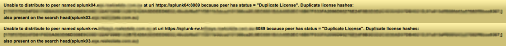:( or $$$
Open Source?
Elasticsearch + Logstash + Kibana

"Not only is it free. But it's actually better."
-- Me
You can do really cool stuff
Everything last week
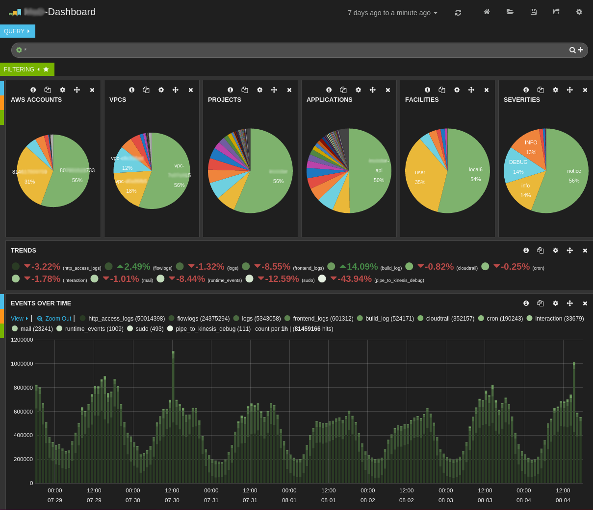You can do really cool stuff
User interactions w/ our apps
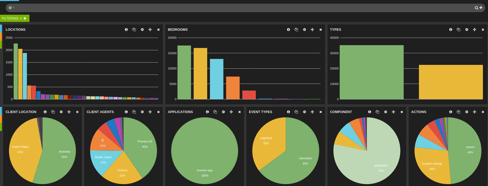You can do really cool stuff
Capture user input
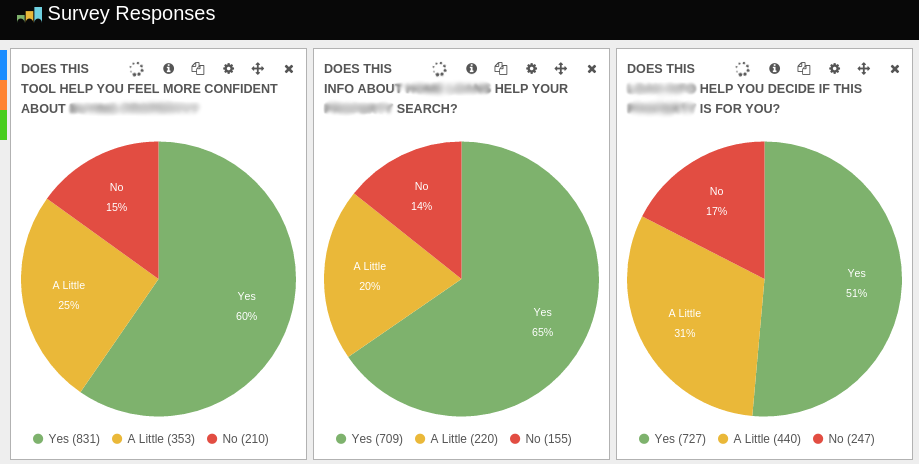You can do really cool stuff
Audit Trails - Who deleted my application?
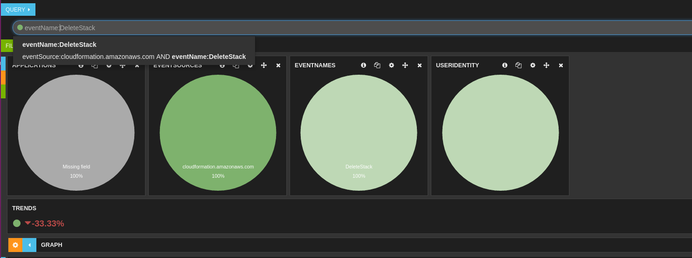You can do really cool stuff
Go meta - How long does it take to process log messages?
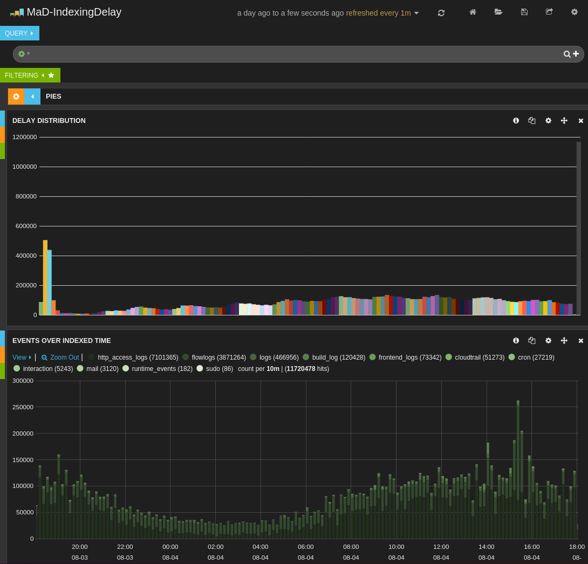You can do really cool stuff
Go meta - How long does it take to process log messages?
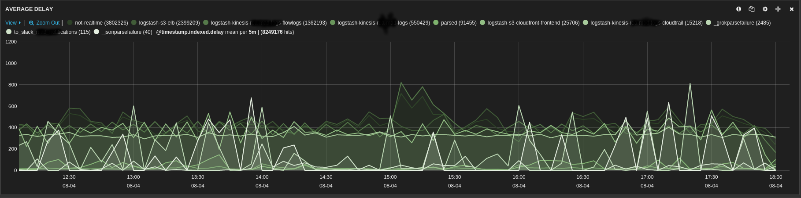You can do really cool stuff
Monitoring beer brewing (!)
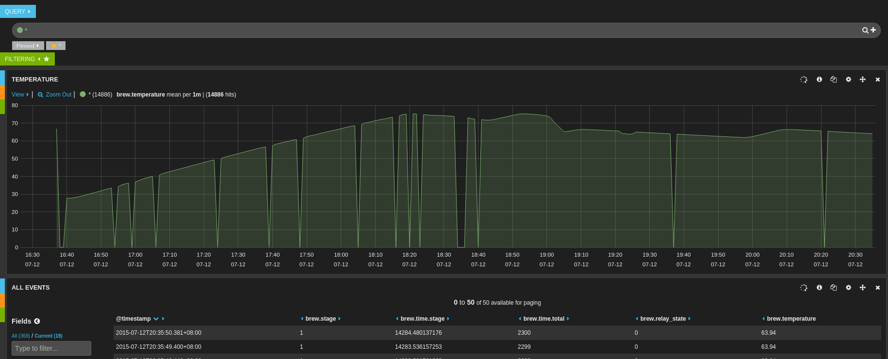How?
1) "Make it reliable"
- Tame your log transport method.
- How long does it take from your app to Elasticsearch?
- Under what circumstances can messages be dropped?
- Are these acceptable? Get back to work if not!
How?
2) "Have a clear 'source of truth' for log events."
- Standardize on a transport technology
- If using multiple transports, merge your sources into one
How?
3) "Make it easy for developers to submit data"
- Make it a default on the system.
- Provide your developers with *simple* libraries.
How?
4) "Ensure every application logs in an *easily* parseable format"
- Your apps are easy to change (logging, log4j, logback, etc)
- Apache, Nginx, etc are easy to change
- sshd, cron, syslog, all these can be relatively easily parsed
- Ruby on Rails logging. No. Stop using it.
How?
5) "Very clearly mark the source of messages -- it'll be useful later"
- Which machine?
- User?
- Application?
- Severity?
- Network?
- Destination email?
How?
6) "Enable event tracing"
- CDN => x-request-id: 123-234-345
- Load-balancer => x-request-id: 123-234-345
- local-proxy => x-request-id: 123-234-345
- app-server => x-request-id: 123-234-345
- controllers => x-request-id: 123-234-345
- services => x-request-id: 123-234-345
- data-stores => x-request-id: 123-234-345
How?
6) "Provide simple alternate input methods for non-traditional uses"
- HTTP Requests
- TCP? UDP Sockets?
- Just get people to send you their data
What we've got going
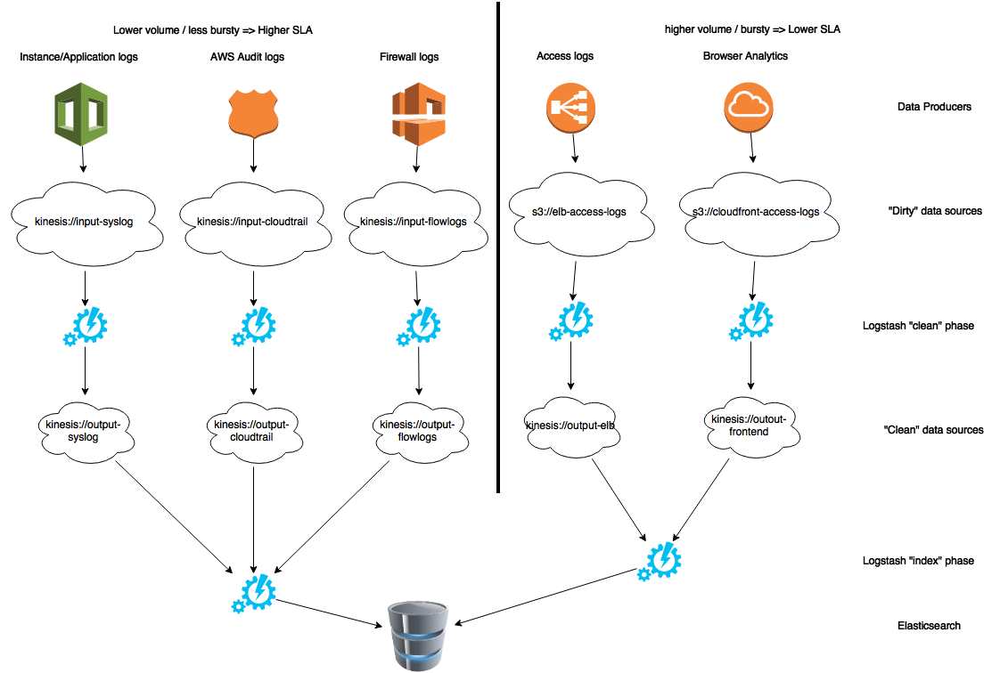Complex Event Processing
Pushing this thing even further

Complex Event Processing
Storm Topologies
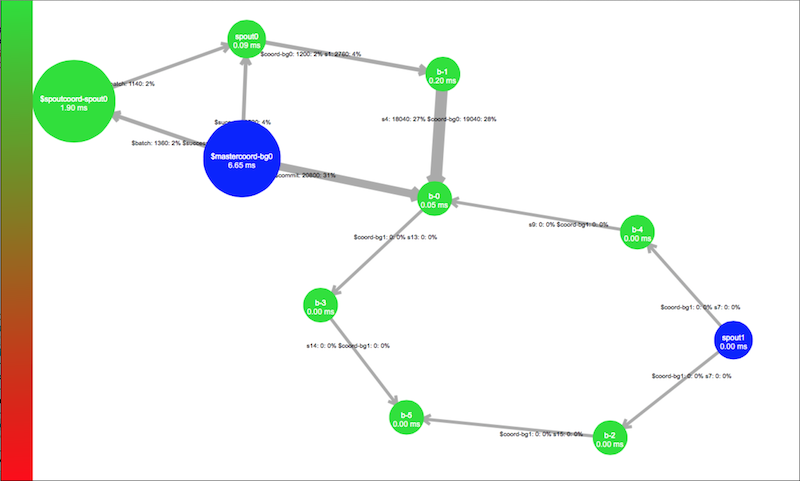Complex Event Processing
Storm Topologies
Shuttle your events through a DAG of processing units
Every "node" is a class running in 1 or more threads/machines
Storm acts as data transport and thread scheduler
You can easily up-scale your topologies
Complex Event Processing
100% rejected connections. Every 12 hours.
Across multiple networks? Increasing destination port numbers?
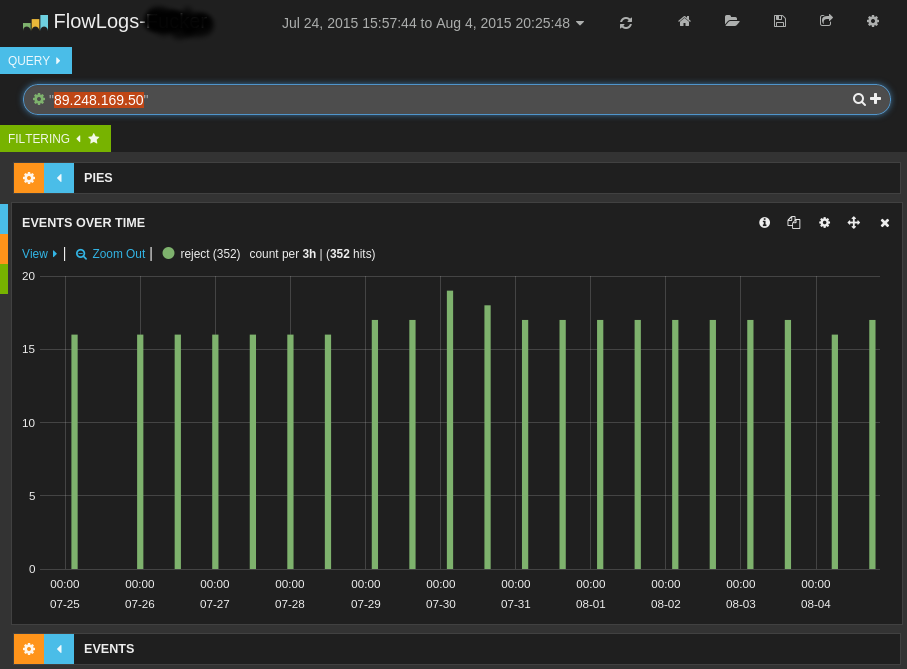I see what you did there.
(psst, probably port-scanning all of AWS slowly)
Complex Event Processing
- 180 lines of ruby.
- One afternoon.
- Found that guy 45 minutes later.